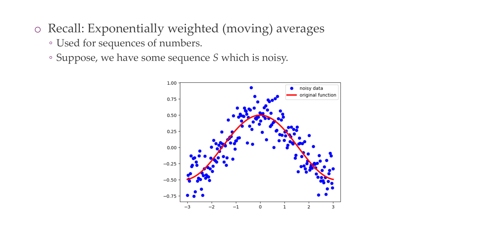

Deep Learning Optimizations I
Deep Learning Optimizations I
Optimizing neural networks

Lecture overview

Optimization US. Learning

Minimizing the empirical risk, –> minimise “loss”
Gradient descent

Batch gradient descent for neuralynets’

https://losslandscape.com/explorer
Gradient descent vs. Stochastic Gradient Descent
Batch size

Why does mini-batch SGD work?

Stochastic gradient-based optimization
Stochastic gradient-based optimization

Stochastic gradient-based optimization

Stochastic gradient-based optimization

Stochastic gradient-based optimization

Gradient descent vs. stochastic gradient descent
Gradient descent vs. stochastic gradient descent

In a nutshell

Let’s see this in practice
https://playground.tensorflow.or

Challenges in optimization

Why are NN losses not convex?

Challenges in optimization

1. Ill-conditioning

1. Ill-conditioning

1. Ill-conditioning

1. Ill-conditioning

2. Local minima

2. Local minima: tricky thing about “blindness”
3. Plateaus/Flat areas

Oni7

Why are “flat” minima preferred?
4. Flat areas, steep minima
4. Cliffs and Exploding Gradients
5. Long term dependencies
Title

Revisit of gradient descent
Setting the learning rate yN

Advanced optimizers

Momentum: designed to accelerate learning, especially when loss is high curvature

Momentum

Momentum

Nesterov momentum

SGD with adaptive step sizes
RMSprop

Adam

Which optimizer to use?

Approximate Second-Order Methods

Newton’s method

Newton’s method

Reading materials

How research ets done art Il Marie Curie.
“Nothing in life is to be
Oni7

Re: constant init: see Tutorial
Weight initialization

Random: yes. But how?

Bad initialization can cause problems

Initializing weights by preserving variance

Initializing weights by preserving variance
Xavier initialization

Interesting results with randomly initialized networks
Reading materials